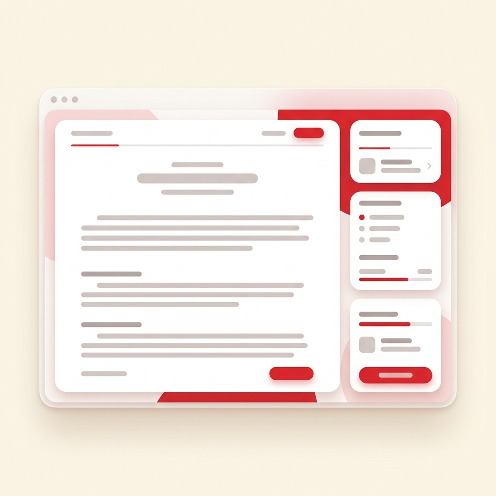

Local
Connects the learner to their national and Arabic identity: local heritage, customs, landmarks, arts, and literature.
A progressive reading journey across six levels—from kindergarten to university—that builds the thinking reader rather than just the speaker, with content that connects learners to their identity and world.
Many master the pronunciation of words,
but few reach their meaning.
Bayan exists to bridge this gap for the learner.

Many learners master decoding and pronouncing words, but struggle to comprehend or analyze what they read. This problem is compounded by a scarcity of progressive Arabic reading content built on scientific foundations.
Reading without Comprehension — The learner reads the entire text without grasping its true essence.
Unregulated Content — Teachers author their own materials or borrow texts of inappropriate reading levels.
Detachment from Identity — Texts do not touch upon the learner's cultural and civilizational world.
Every topic is addressed through four integrated axes, making the text not just reading material, but a window to knowledge and identity.


Gradation is not limited to text length, but includes conceptual depth, vocabulary density, styling type, and diacritic distribution.


The learner reads and interacts, the teacher assigns and evaluates, while the administration tracks performance at scale.
The Arab-Islamic civilization was a beaconBeacon: A center of intellectual and civilizational radiation. of knowledge, seeking to connect thought with action, and establishing reading comprehensionReading Comprehension: Extracting implicit meanings and critiquing texts. as a primary tool to contemplateContemplate: Deep thinking and deriving lessons from texts. cosmic facts.
Q1: What is the primary goal of reading comprehension according to the text?
Student, Teacher, School Administration, Ministry—each with specific permissions and views.
Track progress, class performance, and exportable aggregate reports supporting data-driven decisions.
LMS integration, Single Sign-On SSO where available, and fully responsive layout for all devices.
A ready, progressive reading curriculum that raises outcomes and integrates with your syllabus.
Read More ←A scalable, systemic solution aligned with national curriculum frameworks using unified metrics.
Read More ←Ready-made content and automated grading, allowing teachers to focus on guiding comprehension.
Read More ←A journey tailored to their level, with content connecting them to their identity and inspiring role models.
Read More ←"We preserve the text as it was written,
and build the comprehension as desired."
Request a demo, and our team will get in touch to assess your institution's needs and prepare a customized experience.